※この記事は2023/02/19に編集した記事を再公開したものです。 この間横浜から西国分寺に遠征したのでその写真を。 出発は横浜駅。今回は横浜→大岡山→(武蔵)溝の口→府中本町→西国分寺の予定で遠征することにした。 実は自由が丘で大井町線から行ったほうが早いが、大井町線の9000系の音を少しでも楽しむため、若干遠回りで行くことにした。 (東横線に東急9000系が走っていれば大井町線に乗らなくとも良いが。今更9年以上前の話をしても...) さて、取り合えず東横線の改札口を通り、どの列車が来るかを期待しながら階段を下りる。 本当は東武9000系の唸るAFEチョッパの音を、まあまあ停車駅が多く、尚且つ高速で走る急行電車に乗りながら聞きたいところだが.. 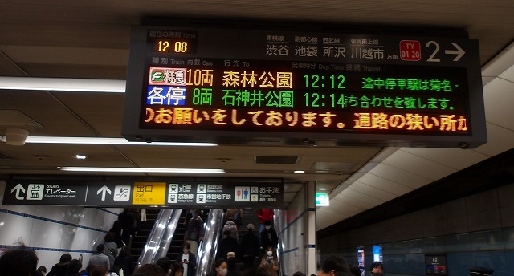 先発の電車は東横特急の森林公園行。そして東武9000系は来ないらしい。 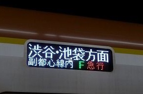 やって来たのは副都心線の車両。 「副都心線内は」急行電車になるこの電車に乗る。 電車は菊名駅に到着。ここで、各停渋谷行きを抜かす。 各停電車はみなとみらい線の車両だが、何か違和感を感じる。 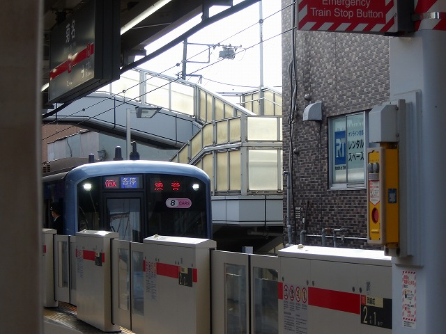 お気づきであろうか。実は種別表示がLED表示なのである。 みなとみらい線のY500系は、種別表示が幕であるはずだが、この列車はLED。ということは、この車両は東急から譲渡された元東横線5050系の車両だということが分かる。良く考えてみたら、行先表示がフルカラーLEDではないので譲渡車ではない。 最近、Y500系の種別幕のフルカラーLED化が進展している模様。 菊名出発後は全面展望を楽しみながら更に進んで行く。 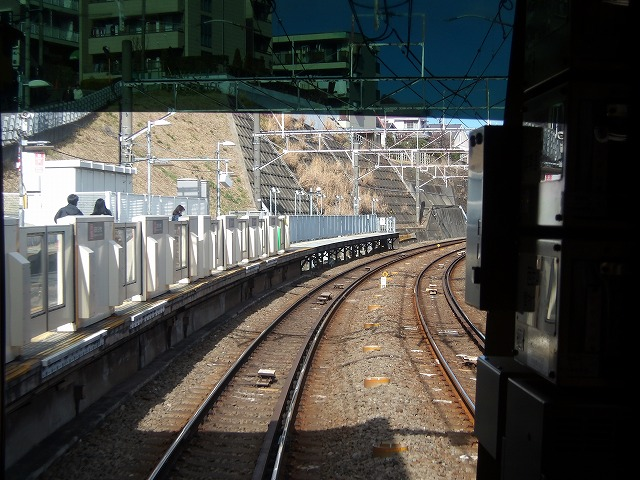 この駅では恐らく良い写真が撮れるはず。然し駅名を覚えていないという... 途中からはまるで国鉄の様に線形の良い直線の線路が伸びる。 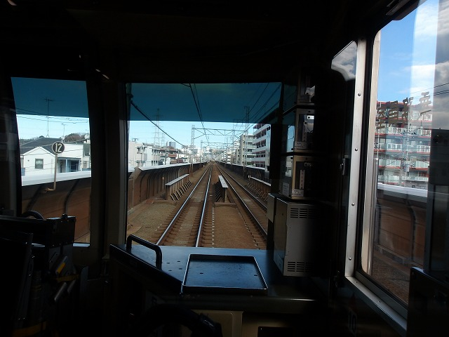 そう考えている内に列車は日吉に接近。そして最新型の都営6500系と並走。 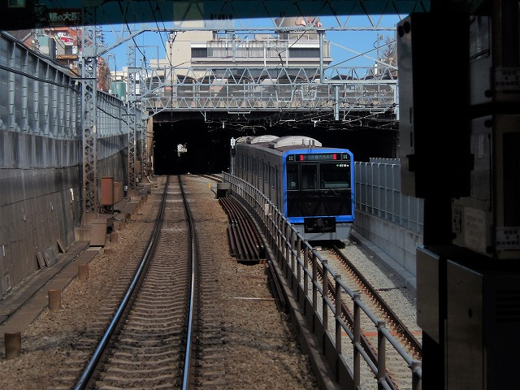 今は日吉を通過する東横特急も、新横浜線開業後は日吉に停車するようになるのだろうか。 日吉を出ると今度は東急5080系と並走。乗っている電車は特急なので容易に追い抜かしてしまう。 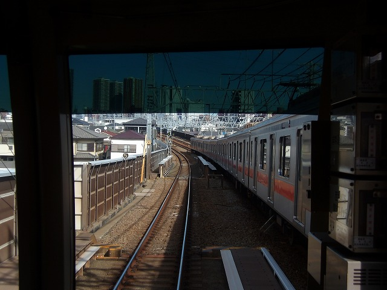 武蔵小杉に到着後、暫く駅のホームで写真を撮ることにした。 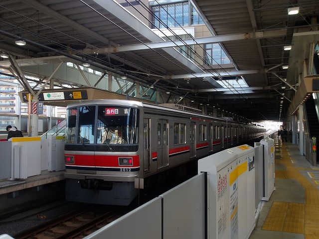 やはり、副都心線といえば営団7000系を思い浮かび、なかなか10000系には馴染めない。 (というかもう17000系も出ているが。) 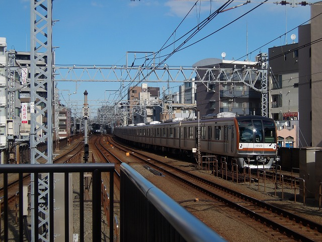 数年前迄は、「営団も良くも古い電車をVVVF化させてまでも使い回し続けるな」と良く思っていたが、 最早その時代は終わってしまい、半蔵門線の8000系さえ数が少なくなってきた。 尚、途中で東武9000系が回送で来たのに撮るのが間に合わなかったのは裏話。 日吉で見た三田線の6500系に乗り、さらに都心に向かう。 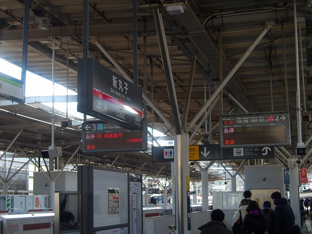 新丸子で構図的に良さそうな写真が撮れた(気がする)。 多摩川で写真撮影のためホームに出る。 昔は多摩川で良い写真が撮れた(はず)が、(恐らく)エレベーターができたことにより、写真が撮りづらくなった。(気のせいか?) 取り合えず場所を変えて写真を撮る。 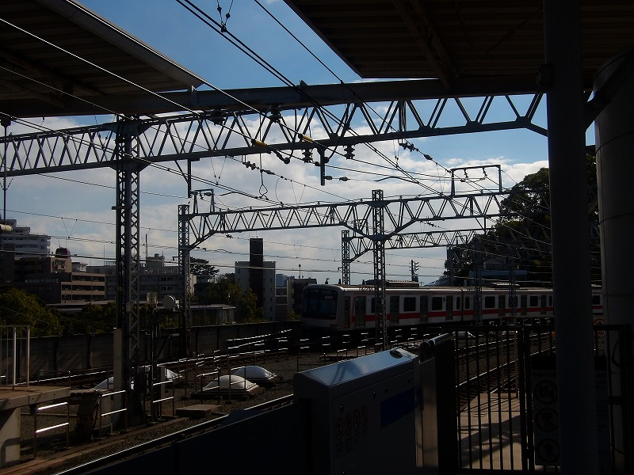 思いっ切り逆光という...前写真を撮った時は夕方だったことをそこで思い出した。 然し今はかなり便利な世の中なので、電算機で補正すれば良さそうに見えないこともない。 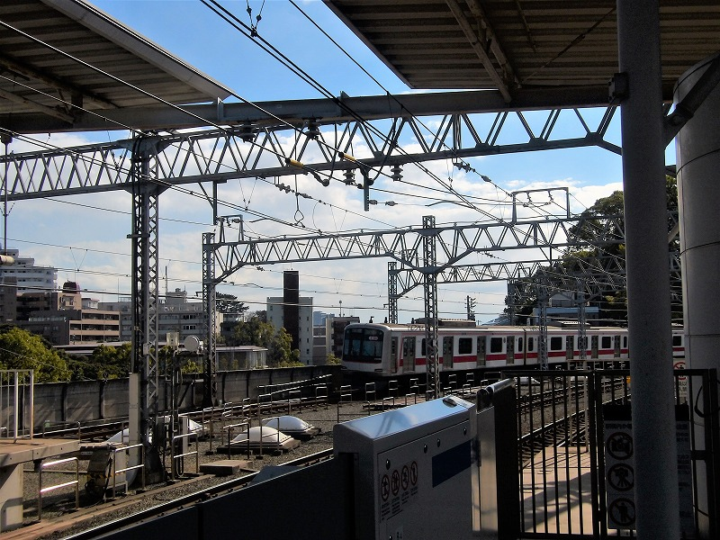 ↑(補正後) それにしても天気が良く、空気もきれいなのは何とも嬉しかった。 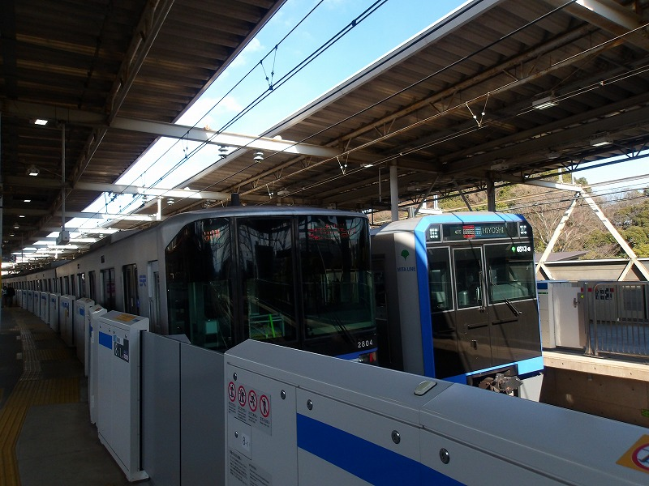 これでホームドアが無ければ猶更良いんだが。(東急はホームドアを全駅に設置済み) ここから大井町線方面へ出て更に進むが、今回はここまで。 また次回もお楽しみに。